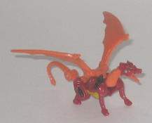
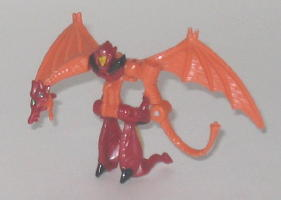
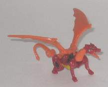
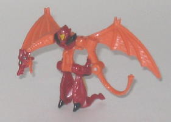
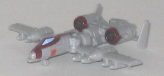
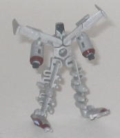
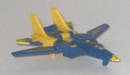
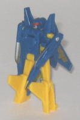

 
Difficulty of Transformation : Very Easy
Color Scheme : Orange, dull brick red, and some glossy black, dull golden yellow, and light metallic blue
Individual Rating : 5.4
Allegiance
: Autobot
Size
: Mini-Con (3-pack)
Overall Rating
: 6.4
 Nightscream
Nightscream


Difficulty of Transformation
: Very
Easy
Color Scheme
: Orange, dull brick
red, and some glossy black, dull golden yellow, and light metallic blue
Individual Rating
: 5.4
The odd 'bot out in terms
of alt mode, Nightscream is the only beastie of the bunch. And he's a cute
widdle dwagon, awwww! It is an interesting idea making something as big
as a dragon into a Minicon, but it works, as Nightscream looks kinda like
a baby dragon, anyways. This mode is top-notch, with excellent proportions
all over. The main colors of orange and red fit a dragon very well, and
the yellow and black paint apps serve as nice contrast colors against the
dull red. Nightscream really could've used a few paint apps on his wings,
but otherwise he's got a good amount of paint. He's also got quite a bit
of technorganic detailing, down to the exposed mechanical "tendons" on
his back leg. I also like the metal plate detailing on his wings. He can
move at the base of the tail, the wings, the base of the neck, and the
jaw. His legs can't move, alas, but it's kind of hard to expect too much
in that area considering how teeny Nightscream is. Nightscream's Minicon
port is at a rather...odd... area, to say the least, behind between his...
back legs... yeah....
Nightscream's robot
mode, on the other hand, is funky with a capital F. I do like the way his
wings frame this mode, and the way the sides of his body form the legs
is pretty creative, even if the dragon legs hang off of the back of them.
I don't even mind the dragon head-arm that much, either, considering that
it looks like a claw as well as the limiations inherent in the size of
the figure. But man, what is WITH the rest of him? How does a dragon tail
even remotely qualify as an actual arm? There's not even a hand molded
into the side of it or anything. His face also looks like Sesame Street's
Bert in a helmet with his face mashed against the window-- hardly a great
sculpt. Nightscream also has no real stomach to speak of, just a very skinny
piece of plastic that juts out from under his chest and leans forward at
a slight angle until it meets the hips. All in all, it's hard to see how
a Transformer this funky-looking could pose a real threat to Decepticons.
Nightscream has an excellent
dragon mode and some nice detailing, but his robot mode has some really
odd proportions and a pretty pathetic right arm. My least favorite of the
Clear Skies Team.
 Steel
Wind
Steel
Wind


Difficulty of Transformation
: Very
Easy
Color Scheme
: Light milky gray and
some glossy maroon, charcoal black, and light sky blue
Individual Rating
: 7.1
Steel Wind (cool name!)
has a fighter airplane for an alt mode. This mode is absolutely flawless
in terms of design, with no robot extras whatsoever and pretty much perfect
proportions. Ther'e also plenty of mold detailing, with little "rivets"
on the "steel plating", even on such a miniscule toy. The overall color
scheme of light gray and maroon is a bit dull, however, and more paint
applications really would've helped make the toy look more visually interesting.
Steel Wind's Minicon port is on the underside of this mode, pretty much
smack-dab in the center to the rear of the main wings.
Steel Wind's robot mode
is a bit funky looking, but design-wise it's pretty ingenious. The idea
of making the wings two seperate pieces that rotate around the center and
using the halves of the plane cockpit to form the feet was a pretty cool
idea, though it probably would've worked a little better on a larger toy
where more could've been done with the gi-normous flat feet Steel Wind
now has. The actual legs could use a little more "meat" to them so they
didn't look so stick-like, though the propellers and the like on the wings
help with this at least somewhat. The face sculpt is pretty weird-- I can't
make heads or tails out of what the details on his lower head are supposed
to be, and his really large nose and narrow eyes also look pretty weird.
I do like how the rear wings make his shoulders, however, and the fact
that he even has tiny little fists that pop out of his turbine-arms-- a
totally unexpected feature for a toy this small-- is realy neat. His articulationb
is fairly limited, though still okay for a Minicon-- he can move at the
shoulders (at two points), and at his hips. His right hip ball joint, however,
is actually a little too large to the point where the hip piece doesn't
close all the way around the joint! Needless to say, it pops off very,
VERY easily, and it's what's most annoying about the toy.
Steel Wind has a top-notch
vehicle mode and a rather ingenious transformation, though his legs look
a tad funky. My favorite of the Clear Skies Team.
 Thunderwing
Thunderwing


Difficulty of Transformation
: Easy
Color Scheme
: Dark blue, "cheese"
yellow, and some metallic bluish silver, dull metallic greenish gold, and
dull red
Individual Rating
: 6.8
Thunderwing's alternate
mode is your standard jet, and it looks excellent all-around. There's no
real robot extras whatsoever, and the proportions are spot-on with no undercarriage
junk that is so common among jet Transformers. The color scheme of blue
and yellow may not be the most exciting in the world, but the contrast
fairly well and certainly don't clash. Thunderwing has a fair amount of
mold "steel panel" detailing in this mode, and he has a good amount of
paint detailing-- I especially like how the Autobot symbol was worked into
the symbols on his wings. In case you're wondering, Thunderwing's Minicon
port is on the rear of this mode, at a bit of a diagonal from the rest
of the mode, given that it's on the back of the piece that forms the robot
head, and that piece doesn't fold inwards quite enough to make it flush
with the overall shape of the jet mode.
Thunderwing's robot
mode looks fairly good for the most part, though it does have some flaws.
The most obvious one is that his hands are just halves of his plane cockpit--
there's hands molded on the outside of the halves, but the fact that he
still basically has big pointy tips really overrides that small detail.
His other big downside is that he has practically no articulation-- he
can move at the shoulders, but that's it-- no leg movement at all, which
really shouldn't be happening on figures in this day and age, even figures
this small. With the exception of the aforementioned arms, however, all
the proportions in this mode are nice enough, and the head sculpt is well-done,
with some nice shape contrasts considering the square visor and jaw and
the rounded head shape.-- the red and silver also contrast well against
the blue color of the rest of the head. He could've used another paint
app or two on his chest or legs, though. His jet wings stick out from behind
his legs and back, but they fit in with the overall look of the mode and
don't get in the way of articulation (such as it is), so I don't mind them.
Thunderwing is pretty
middle-of-the-road as far as Minicons go, with a very nice jet mode and
a so-so robot mode. His major downsides are his odd arms and his almost
complete lack of articulation.
The Clear Skies Team doesn't have any really awesome, stand-out Minicons, but only one is particularly bad, the other two are pretty good, though they have their flaws. Better than the Wave 1 Classics Minicon Teams, but my least favorite of the Wave 2 Teams, mostly because of Nightscream.
Review by Beastbot